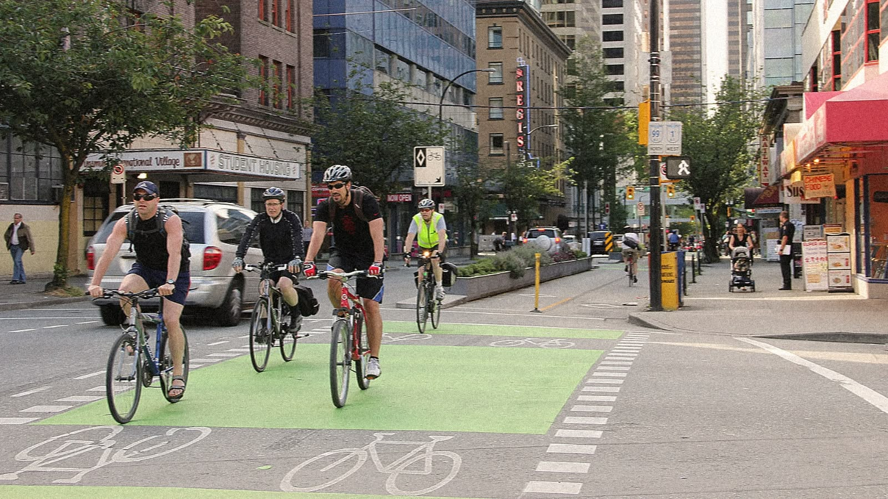
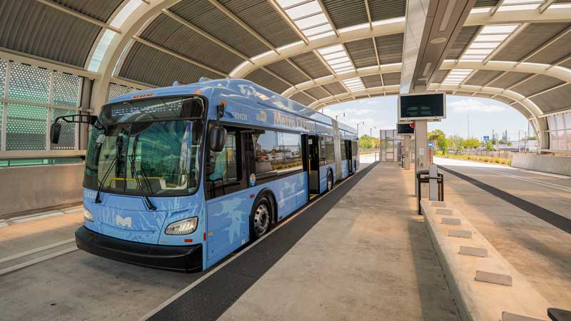

Promoting public transport, cycling and walking to cut traffic, pollution and travel stress.
Every city runs on movement — but how people move makes all the difference. Green transportation replaces single-occupancy car trips with buses, trains, bicycles and footpaths, freeing up road space, cutting emissions, and making streets safer and quieter for everyone.
can carry as many people as 30–40 cars, easing congestion for everyone on the road.
are produced by walking and cycling — the cheapest green commute there is.
and cleaner air follow naturally when fewer engines are idling in traffic.
Frequent, affordable buses, metros and trains give people a real alternative to driving.
Safe, separated cycling infrastructure makes two wheels a practical daily choice.
Wide footpaths, shade and pedestrian crossings turn walking into a pleasant option.
EV adoption and carpooling reduce the emissions and congestion cost of car travel.
Pedestrian-only city centres reclaim public space and boost local businesses.
Coordinated signal timing reduces idling, queues and wasted fuel.


Cities that get this right share a few common threads: